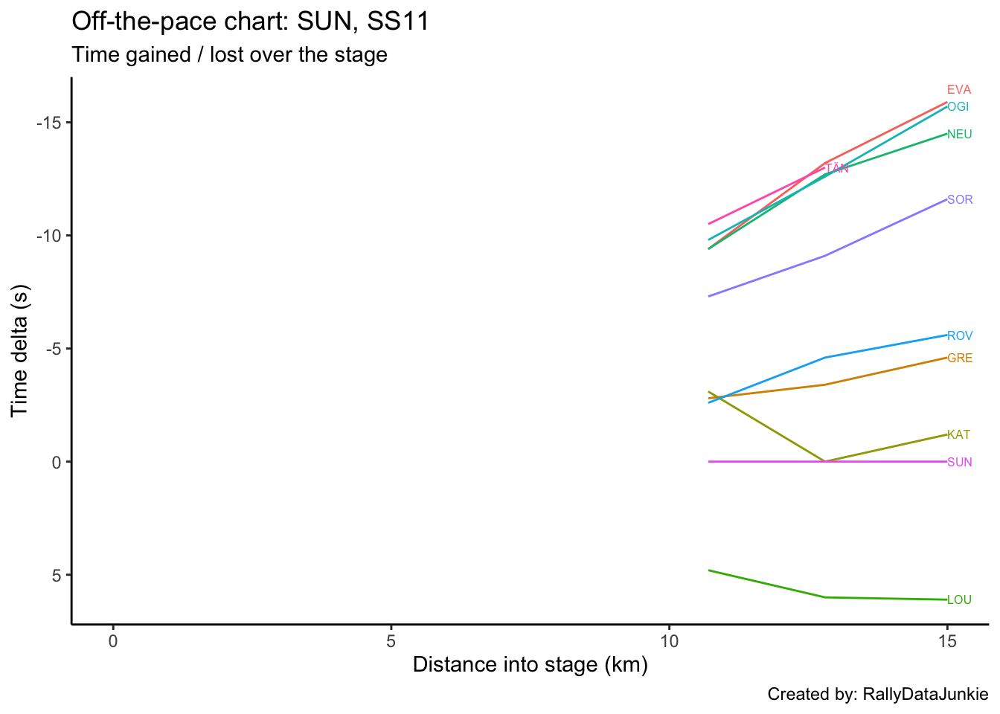

1 SS1 Results
| Pos | Car | Code | Time (s) | Gap | Diff |
|---|---|---|---|---|---|
| 1 | 8 | TÄN | 788.3 | 0.0 | 0.0 |
| 2 | 69 | ROV | 789.9 | 1.6 | 1.6 |
| 3 | 1 | OGI | 797.9 | 9.6 | 8.0 |
| 4 | 6 | SOR | 798.7 | 10.4 | 0.8 |
| 5 | 18 | KAT | 800.4 | 12.1 | 1.7 |
| 6 | 11 | NEU | 805.0 | 16.7 | 4.6 |
| 7 | 33 | EVA | 805.6 | 17.3 | 0.6 |
| 8 | 44 | GRE | 816.9 | 28.6 | 11.3 |
| 9 | 7 | LOU | 818.4 | 30.1 | 1.5 |
1.1 Stage SS1 Splits Analysis
Reports on splits
1.1.1 Split Locations
Length of each split section in km:
| full_split_distances | stage_dist | |
|---|---|---|
| split_1 | 5.15 | 5.15 |
| split_2 | 4.92 | 10.07 |
| split_3 | 4.78 | 14.85 |
| split_4 | 4.94 | 19.79 |
| split_N | 2.50 | 22.29 |
1.1.2 Stage Split Times & Result
Summary of stage split times and overall stage result:
| code | split_1 | split_2 | split_3 | split_4 | split_N | diffFirstS | position |
|---|---|---|---|---|---|---|---|
| TÄN | 189.9 | 369.6 | 526.6 | 699.7 | 788.3 | 0.0 | 1 |
| ROV | 191.3 | 371.4 | 527.5 | 702.1 | 789.9 | 1.6 | 2 |
| OGI | 194.8 | 376.5 | 535.3 | 709.0 | 797.9 | 9.6 | 3 |
| SOR | 193.1 | 373.3 | 531.9 | 709.0 | 798.7 | 10.4 | 4 |
| KAT | 195.5 | 376.2 | 534.6 | 711.1 | 800.4 | 12.1 | 5 |
| NEU | 194.5 | 375.8 | 536.8 | 714.1 | 805.0 | 16.7 | 6 |
| EVA | 195.7 | 378.5 | 538.0 | 715.3 | 805.6 | 17.3 | 7 |
| GRE | 197.1 | 380.0 | 541.8 | 725.0 | 816.9 | 28.6 | 8 |
| LOU | 199.2 | 384.1 | 546.4 | 725.1 | 818.4 | 30.1 | 9 |
| SUN | 196.2 | 379.0 | 538.3 | 713.9 | NA | NA | NA |
| FER | 224.7 | 434.1 | 622.0 | 827.9 | NA | NA | NA |
1.1.3 Split Time Rankings
Rank of each split time:
| code | split_1 | split_2 | split_3 | split_4 | split_N |
|---|---|---|---|---|---|
| TÄN | 1 | 1 | 1 | 1 | 1 |
| ROV | 2 | 2 | 2 | 2 | 2 |
| OGI | 5 | 6 | 5 | 3 | 3 |
| SOR | 3 | 3 | 3 | 3 | 4 |
| KAT | 6 | 5 | 4 | 4 | 5 |
| NEU | 4 | 4 | 6 | 6 | 6 |
| EVA | 7 | 7 | 7 | 7 | 7 |
| GRE | 9 | 9 | 9 | 8 | 8 |
| LOU | 10 | 10 | 10 | 9 | 9 |
Rank on each split section:
| code | split_1 | split_2 | split_3 | split_4 | split_N |
|---|---|---|---|---|---|
| TÄN | 1 | 1 | 1 | 1 | 1 |
| ROV | 2 | 2 | 2 | 2 | 2 |
| OGI | 5 | 6 | 5 | 3 | 3 |
| SOR | 3 | 3 | 3 | 3 | 4 |
| KAT | 6 | 5 | 4 | 4 | 5 |
| NEU | 4 | 4 | 6 | 6 | 6 |
| EVA | 7 | 7 | 7 | 7 | 7 |
| GRE | 9 | 9 | 9 | 8 | 8 |
| LOU | 10 | 10 | 10 | 9 | 9 |
1.1.4 Split Section Pace
Pace is measured in seconds per kilometer, which is to say, how long it takes to complete each kilometer (lower is better):
| code | split_1 | split_2 | split_3 | split_4 | split_N |
|---|---|---|---|---|---|
| TÄN | 36.87 | 36.52 | 32.85 | 35.04 | 35.44 |
| ROV | 37.15 | 36.61 | 32.66 | 35.34 | 35.12 |
| OGI | 37.83 | 36.93 | 33.22 | 35.16 | 35.56 |
| SOR | 37.50 | 36.63 | 33.18 | 35.85 | 35.88 |
| KAT | 37.96 | 36.73 | 33.14 | 35.73 | 35.72 |
| NEU | 37.77 | 36.85 | 33.68 | 35.89 | 36.36 |
| EVA | 38.00 | 37.15 | 33.37 | 35.89 | 36.12 |
| GRE | 38.27 | 37.17 | 33.85 | 37.09 | 36.76 |
| LOU | 38.68 | 37.58 | 33.95 | 36.17 | 37.32 |
| SUN | 38.10 | 37.15 | 33.33 | 35.55 | NA |
| FER | 43.63 | 42.56 | 39.31 | 41.68 | NA |
1.1.5 Ultimate Stage Comparisons
Split time comparisons relative to various ultimage stage time calculations.
These views provide various ways of comparing the performance of each driver to various ghost drivers:
- best recorded split time at each split (ultimate actuals): gives an estimate of how well the driver’s split times compare with each first ranked split time (time into stage at each split);
- fastest time going from one split to the next (ultimate sections): gives an estimate of how quickly each driver completed each split section relative to the quickest time recorded completing that split section (time taken to go from one split point to the next);
- accumulated ultimate sections times: gives and estimate of how quickly the driver is going relative to the fastest possible completion of the stage based on accumulated ultimate split section times.
1.1.5.1 Ultimate Actuals
Driver times compared to the first ranked recorded split time at each split:
| code | split_1 | split_2 | split_3 | split_4 | split_N |
|---|---|---|---|---|---|
| TÄN | 0.0 | 0.0 | 0.0 | 0.0 | 0.0 |
| ROV | 1.4 | 1.8 | 0.9 | 2.4 | 1.6 |
| OGI | 4.9 | 6.9 | 8.7 | 9.3 | 9.6 |
| SOR | 3.2 | 3.7 | 5.3 | 9.3 | 10.4 |
| KAT | 5.6 | 6.6 | 8.0 | 11.4 | 12.1 |
| NEU | 4.6 | 6.2 | 10.2 | 14.4 | 16.7 |
| EVA | 5.8 | 8.9 | 11.4 | 15.6 | 17.3 |
| GRE | 7.2 | 10.4 | 15.2 | 25.3 | 28.6 |
| LOU | 9.3 | 14.5 | 19.8 | 25.4 | 30.1 |
| ultimate | 0.0 | 0.0 | 0.0 | 0.0 | 0.0 |
1.1.5.2 Ultimate Sections
Split durations rebased relative to the fastest transit of each split section:
| code | split_1 | split_2 | split_3 | split_4 | split_N |
|---|---|---|---|---|---|
| TÄN | 0.0 | 0.0 | 0.9 | 0.0 | 0.8 |
| ROV | 1.4 | 0.4 | 0.0 | 1.5 | 0.0 |
| OGI | 4.9 | 2.0 | 2.7 | 0.6 | 1.1 |
| SOR | 3.2 | 0.5 | 2.5 | 4.0 | 1.9 |
| KAT | 5.6 | 1.0 | 2.3 | 3.4 | 1.5 |
| NEU | 4.6 | 1.6 | 4.9 | 4.2 | 3.1 |
| EVA | 5.8 | 3.1 | 3.4 | 4.2 | 2.5 |
| GRE | 7.2 | 3.2 | 5.7 | 10.1 | 4.1 |
| LOU | 9.3 | 5.2 | 6.2 | 5.6 | 5.5 |
| ultimate | 0.0 | 0.0 | 0.0 | 0.0 | 0.0 |
1.1.5.3 Ultimate Accumulated Sections
Actual split times relative to the accumulated ultimate split section times:
| code | split_1 | split_2 | split_3 | split_4 | split_N |
|---|---|---|---|---|---|
| TÄN | 0.0 | 0.0 | 0.9 | 0.9 | 1.7 |
| ROV | 1.4 | 1.8 | 1.8 | 3.3 | 3.3 |
| OGI | 4.9 | 6.9 | 9.6 | 10.2 | 11.3 |
| SOR | 3.2 | 3.7 | 6.2 | 10.2 | 12.1 |
| KAT | 5.6 | 6.6 | 8.9 | 12.3 | 13.8 |
| NEU | 4.6 | 6.2 | 11.1 | 15.3 | 18.4 |
| EVA | 5.8 | 8.9 | 12.3 | 16.5 | 19.0 |
| GRE | 7.2 | 10.4 | 16.1 | 26.2 | 30.3 |
| LOU | 9.3 | 14.5 | 20.7 | 26.3 | 31.8 |
| ultimate | 0.0 | 0.0 | 0.0 | 0.0 | 0.0 |
1.1.6 Split Section Pace Distribution
Distribution of pace values for each split section:
1.2 Driver Report, SS1 - OGI
Stage report for OGI.
| Pos | Car | Code | Time (s) | Gap | Diff |
|---|---|---|---|---|---|
| 1 | 8 | TÄN | -9.6 | -9.6 | 0.0 |
| 2 | 69 | ROV | -8.0 | -8.0 | 1.6 |
| 3 | 1 | OGI | 0.0 | 0.0 | 8.0 |
| 4 | 6 | SOR | 0.8 | 0.8 | 0.8 |
| 5 | 18 | KAT | 2.5 | 2.5 | 1.7 |
| 6 | 11 | NEU | 7.1 | 7.1 | 4.6 |
| 7 | 33 | EVA | 7.7 | 7.7 | 0.6 |
| 8 | 44 | GRE | 19.0 | 19.0 | 11.3 |
| 9 | 7 | LOU | 20.5 | 20.5 | 1.5 |
1.2.1 Rebased Split Times
OGI’s delta at each split compared to other drivers.
| code | split_1 | split_2 | split_3 | split_4 | split_N |
|---|---|---|---|---|---|
| TÄN | -4.9 | -6.9 | -8.7 | -9.3 | -9.6 |
| ROV | -3.5 | -5.1 | -7.8 | -6.9 | -8.0 |
| OGI | 0.0 | 0.0 | 0.0 | 0.0 | 0.0 |
| SOR | -1.7 | -3.2 | -3.4 | 0.0 | 0.8 |
| KAT | 0.7 | -0.3 | -0.7 | 2.1 | 2.5 |
| NEU | -0.3 | -0.7 | 1.5 | 5.1 | 7.1 |
| EVA | 0.9 | 2.0 | 2.7 | 6.3 | 7.7 |
| GRE | 2.3 | 3.5 | 6.5 | 16.0 | 19.0 |
| LOU | 4.4 | 7.6 | 11.1 | 16.1 | 20.5 |
| SUN | 1.4 | 2.5 | 3.0 | 4.9 | NA |
| FER | 29.9 | 57.6 | 86.7 | 118.9 | NA |
Accumulated stage time deltas at each split:

1.2.2 Within-Split Duration Deltas
OGI’s delta in time to complete each split section compared to other drivers:
| code | split_1 | split_2 | split_3 | split_4 | split_N |
|---|---|---|---|---|---|
| TÄN | -4.9 | -2.0 | -1.8 | -0.6 | -0.3 |
| ROV | -3.5 | -1.6 | -2.7 | 0.9 | -1.1 |
| OGI | 0.0 | 0.0 | 0.0 | 0.0 | 0.0 |
| SOR | -1.7 | -1.5 | -0.2 | 3.4 | 0.8 |
| KAT | 0.7 | -1.0 | -0.4 | 2.8 | 0.4 |
| NEU | -0.3 | -0.4 | 2.2 | 3.6 | 2.0 |
| EVA | 0.9 | 1.1 | 0.7 | 3.6 | 1.4 |
| GRE | 2.3 | 1.2 | 3.0 | 9.5 | 3.0 |
| LOU | 4.4 | 3.2 | 3.5 | 5.0 | 4.4 |
| SUN | 1.4 | 1.1 | 0.5 | 1.9 | NA |
| FER | 29.9 | 27.7 | 29.1 | 32.2 | NA |
1.2.3 Within-Split Pace Deltas
| code | split_1 | split_2 | split_3 | split_4 | split_N |
|---|---|---|---|---|---|
| TÄN | -0.95 | -0.41 | -0.38 | -0.12 | -0.12 |
| ROV | -0.68 | -0.33 | -0.56 | 0.18 | -0.44 |
| OGI | 0.00 | 0.00 | 0.00 | 0.00 | 0.00 |
| SOR | -0.33 | -0.30 | -0.04 | 0.69 | 0.32 |
| KAT | 0.14 | -0.20 | -0.08 | 0.57 | 0.16 |
| NEU | -0.06 | -0.08 | 0.46 | 0.73 | 0.80 |
| EVA | 0.17 | 0.22 | 0.15 | 0.73 | 0.56 |
| GRE | 0.45 | 0.24 | 0.63 | 1.92 | 1.20 |
| LOU | 0.85 | 0.65 | 0.73 | 1.01 | 1.76 |
| SUN | 0.27 | 0.22 | 0.10 | 0.38 | NA |
| FER | 5.81 | 5.63 | 6.09 | 6.52 | NA |
1.3 Driver Report, SS1 - NEU
Stage report for NEU.
| Pos | Car | Code | Time (s) | Gap | Diff |
|---|---|---|---|---|---|
| 1 | 8 | TÄN | -16.7 | -16.7 | 0.0 |
| 2 | 69 | ROV | -15.1 | -15.1 | 1.6 |
| 3 | 1 | OGI | -7.1 | -7.1 | 8.0 |
| 4 | 6 | SOR | -6.3 | -6.3 | 0.8 |
| 5 | 18 | KAT | -4.6 | -4.6 | 1.7 |
| 6 | 11 | NEU | 0.0 | 0.0 | 4.6 |
| 7 | 33 | EVA | 0.6 | 0.6 | 0.6 |
| 8 | 44 | GRE | 11.9 | 11.9 | 11.3 |
| 9 | 7 | LOU | 13.4 | 13.4 | 1.5 |
1.3.1 Rebased Split Times
NEU’s delta at each split compared to other drivers.
| code | split_1 | split_2 | split_3 | split_4 | split_N |
|---|---|---|---|---|---|
| TÄN | -4.6 | -6.2 | -10.2 | -14.4 | -16.7 |
| ROV | -3.2 | -4.4 | -9.3 | -12.0 | -15.1 |
| OGI | 0.3 | 0.7 | -1.5 | -5.1 | -7.1 |
| SOR | -1.4 | -2.5 | -4.9 | -5.1 | -6.3 |
| KAT | 1.0 | 0.4 | -2.2 | -3.0 | -4.6 |
| NEU | 0.0 | 0.0 | 0.0 | 0.0 | 0.0 |
| EVA | 1.2 | 2.7 | 1.2 | 1.2 | 0.6 |
| GRE | 2.6 | 4.2 | 5.0 | 10.9 | 11.9 |
| LOU | 4.7 | 8.3 | 9.6 | 11.0 | 13.4 |
| SUN | 1.7 | 3.2 | 1.5 | -0.2 | NA |
| FER | 30.2 | 58.3 | 85.2 | 113.8 | NA |
Accumulated stage time deltas at each split:
1.3.2 Within-Split Duration Deltas
NEU’s delta in time to complete each split section compared to other drivers:
| code | split_1 | split_2 | split_3 | split_4 | split_N |
|---|---|---|---|---|---|
| TÄN | -4.6 | -1.6 | -4.0 | -4.2 | -2.3 |
| ROV | -3.2 | -1.2 | -4.9 | -2.7 | -3.1 |
| OGI | 0.3 | 0.4 | -2.2 | -3.6 | -2.0 |
| SOR | -1.4 | -1.1 | -2.4 | -0.2 | -1.2 |
| KAT | 1.0 | -0.6 | -2.6 | -0.8 | -1.6 |
| NEU | 0.0 | 0.0 | 0.0 | 0.0 | 0.0 |
| EVA | 1.2 | 1.5 | -1.5 | 0.0 | -0.6 |
| GRE | 2.6 | 1.6 | 0.8 | 5.9 | 1.0 |
| LOU | 4.7 | 3.6 | 1.3 | 1.4 | 2.4 |
| SUN | 1.7 | 1.5 | -1.7 | -1.7 | NA |
| FER | 30.2 | 28.1 | 26.9 | 28.6 | NA |
1.3.3 Within-Split Pace Deltas
| code | split_1 | split_2 | split_3 | split_4 | split_N |
|---|---|---|---|---|---|
| TÄN | -0.89 | -0.33 | -0.84 | -0.85 | -0.92 |
| ROV | -0.62 | -0.24 | -1.03 | -0.55 | -1.24 |
| OGI | 0.06 | 0.08 | -0.46 | -0.73 | -0.80 |
| SOR | -0.27 | -0.22 | -0.50 | -0.04 | -0.48 |
| KAT | 0.19 | -0.12 | -0.54 | -0.16 | -0.64 |
| NEU | 0.00 | 0.00 | 0.00 | 0.00 | 0.00 |
| EVA | 0.23 | 0.30 | -0.31 | 0.00 | -0.24 |
| GRE | 0.50 | 0.33 | 0.17 | 1.19 | 0.40 |
| LOU | 0.91 | 0.73 | 0.27 | 0.28 | 0.96 |
| SUN | 0.33 | 0.30 | -0.36 | -0.34 | NA |
| FER | 5.86 | 5.71 | 5.63 | 5.79 | NA |
1.4 Driver Report, SS1 - EVA
Stage report for EVA.
| Pos | Car | Code | Time (s) | Gap | Diff |
|---|---|---|---|---|---|
| 1 | 8 | TÄN | -17.3 | -17.3 | 0.0 |
| 2 | 69 | ROV | -15.7 | -15.7 | 1.6 |
| 3 | 1 | OGI | -7.7 | -7.7 | 8.0 |
| 4 | 6 | SOR | -6.9 | -6.9 | 0.8 |
| 5 | 18 | KAT | -5.2 | -5.2 | 1.7 |
| 6 | 11 | NEU | -0.6 | -0.6 | 4.6 |
| 7 | 33 | EVA | 0.0 | 0.0 | 0.6 |
| 8 | 44 | GRE | 11.3 | 11.3 | 11.3 |
| 9 | 7 | LOU | 12.8 | 12.8 | 1.5 |
1.4.1 Rebased Split Times
EVA’s delta at each split compared to other drivers.
| code | split_1 | split_2 | split_3 | split_4 | split_N |
|---|---|---|---|---|---|
| TÄN | -5.8 | -8.9 | -11.4 | -15.6 | -17.3 |
| ROV | -4.4 | -7.1 | -10.5 | -13.2 | -15.7 |
| OGI | -0.9 | -2.0 | -2.7 | -6.3 | -7.7 |
| SOR | -2.6 | -5.2 | -6.1 | -6.3 | -6.9 |
| KAT | -0.2 | -2.3 | -3.4 | -4.2 | -5.2 |
| NEU | -1.2 | -2.7 | -1.2 | -1.2 | -0.6 |
| EVA | 0.0 | 0.0 | 0.0 | 0.0 | 0.0 |
| GRE | 1.4 | 1.5 | 3.8 | 9.7 | 11.3 |
| LOU | 3.5 | 5.6 | 8.4 | 9.8 | 12.8 |
| SUN | 0.5 | 0.5 | 0.3 | -1.4 | NA |
| FER | 29.0 | 55.6 | 84.0 | 112.6 | NA |
Accumulated stage time deltas at each split:

1.4.2 Within-Split Duration Deltas
EVA’s delta in time to complete each split section compared to other drivers:
| code | split_1 | split_2 | split_3 | split_4 | split_N |
|---|---|---|---|---|---|
| TÄN | -5.8 | -3.1 | -2.5 | -4.2 | -1.7 |
| ROV | -4.4 | -2.7 | -3.4 | -2.7 | -2.5 |
| OGI | -0.9 | -1.1 | -0.7 | -3.6 | -1.4 |
| SOR | -2.6 | -2.6 | -0.9 | -0.2 | -0.6 |
| KAT | -0.2 | -2.1 | -1.1 | -0.8 | -1.0 |
| NEU | -1.2 | -1.5 | 1.5 | 0.0 | 0.6 |
| EVA | 0.0 | 0.0 | 0.0 | 0.0 | 0.0 |
| GRE | 1.4 | 0.1 | 2.3 | 5.9 | 1.6 |
| LOU | 3.5 | 2.1 | 2.8 | 1.4 | 3.0 |
| SUN | 0.5 | 0.0 | -0.2 | -1.7 | NA |
| FER | 29.0 | 26.6 | 28.4 | 28.6 | NA |
1.4.3 Within-Split Pace Deltas
| code | split_1 | split_2 | split_3 | split_4 | split_N |
|---|---|---|---|---|---|
| TÄN | -1.13 | -0.63 | -0.52 | -0.85 | -0.68 |
| ROV | -0.85 | -0.55 | -0.71 | -0.55 | -1.00 |
| OGI | -0.17 | -0.22 | -0.15 | -0.73 | -0.56 |
| SOR | -0.50 | -0.53 | -0.19 | -0.04 | -0.24 |
| KAT | -0.04 | -0.43 | -0.23 | -0.16 | -0.40 |
| NEU | -0.23 | -0.30 | 0.31 | 0.00 | 0.24 |
| EVA | 0.00 | 0.00 | 0.00 | 0.00 | 0.00 |
| GRE | 0.27 | 0.02 | 0.48 | 1.19 | 0.64 |
| LOU | 0.68 | 0.43 | 0.59 | 0.28 | 1.20 |
| SUN | 0.10 | 0.00 | -0.04 | -0.34 | NA |
| FER | 5.63 | 5.41 | 5.94 | 5.79 | NA |
1.5 Driver Report, SS1 - TÄN
Stage report for TÄN.
| Pos | Car | Code | Time (s) | Gap | Diff |
|---|---|---|---|---|---|
| 1 | 8 | TÄN | 0.0 | 0.0 | 0.0 |
| 2 | 69 | ROV | 1.6 | 1.6 | 1.6 |
| 3 | 1 | OGI | 9.6 | 9.6 | 8.0 |
| 4 | 6 | SOR | 10.4 | 10.4 | 0.8 |
| 5 | 18 | KAT | 12.1 | 12.1 | 1.7 |
| 6 | 11 | NEU | 16.7 | 16.7 | 4.6 |
| 7 | 33 | EVA | 17.3 | 17.3 | 0.6 |
| 8 | 44 | GRE | 28.6 | 28.6 | 11.3 |
| 9 | 7 | LOU | 30.1 | 30.1 | 1.5 |
1.5.1 Rebased Split Times
TÄN’s delta at each split compared to other drivers.
| code | split_1 | split_2 | split_3 | split_4 | split_N |
|---|---|---|---|---|---|
| TÄN | 0.0 | 0.0 | 0.0 | 0.0 | 0.0 |
| ROV | 1.4 | 1.8 | 0.9 | 2.4 | 1.6 |
| OGI | 4.9 | 6.9 | 8.7 | 9.3 | 9.6 |
| SOR | 3.2 | 3.7 | 5.3 | 9.3 | 10.4 |
| KAT | 5.6 | 6.6 | 8.0 | 11.4 | 12.1 |
| NEU | 4.6 | 6.2 | 10.2 | 14.4 | 16.7 |
| EVA | 5.8 | 8.9 | 11.4 | 15.6 | 17.3 |
| GRE | 7.2 | 10.4 | 15.2 | 25.3 | 28.6 |
| LOU | 9.3 | 14.5 | 19.8 | 25.4 | 30.1 |
| SUN | 6.3 | 9.4 | 11.7 | 14.2 | NA |
| FER | 34.8 | 64.5 | 95.4 | 128.2 | NA |
Accumulated stage time deltas at each split:

1.5.2 Within-Split Duration Deltas
TÄN’s delta in time to complete each split section compared to other drivers:
| code | split_1 | split_2 | split_3 | split_4 | split_N |
|---|---|---|---|---|---|
| TÄN | 0.0 | 0.0 | 0.0 | 0.0 | 0.0 |
| ROV | 1.4 | 0.4 | -0.9 | 1.5 | -0.8 |
| OGI | 4.9 | 2.0 | 1.8 | 0.6 | 0.3 |
| SOR | 3.2 | 0.5 | 1.6 | 4.0 | 1.1 |
| KAT | 5.6 | 1.0 | 1.4 | 3.4 | 0.7 |
| NEU | 4.6 | 1.6 | 4.0 | 4.2 | 2.3 |
| EVA | 5.8 | 3.1 | 2.5 | 4.2 | 1.7 |
| GRE | 7.2 | 3.2 | 4.8 | 10.1 | 3.3 |
| LOU | 9.3 | 5.2 | 5.3 | 5.6 | 4.7 |
| SUN | 6.3 | 3.1 | 2.3 | 2.5 | NA |
| FER | 34.8 | 29.7 | 30.9 | 32.8 | NA |
1.5.3 Within-Split Pace Deltas
| code | split_1 | split_2 | split_3 | split_4 | split_N |
|---|---|---|---|---|---|
| TÄN | 0.00 | 0.00 | 0.00 | 0.00 | 0.00 |
| ROV | 0.27 | 0.08 | -0.19 | 0.30 | -0.32 |
| OGI | 0.95 | 0.41 | 0.38 | 0.12 | 0.12 |
| SOR | 0.62 | 0.10 | 0.33 | 0.81 | 0.44 |
| KAT | 1.09 | 0.20 | 0.29 | 0.69 | 0.28 |
| NEU | 0.89 | 0.33 | 0.84 | 0.85 | 0.92 |
| EVA | 1.13 | 0.63 | 0.52 | 0.85 | 0.68 |
| GRE | 1.40 | 0.65 | 1.00 | 2.04 | 1.32 |
| LOU | 1.81 | 1.06 | 1.11 | 1.13 | 1.88 |
| SUN | 1.22 | 0.63 | 0.48 | 0.51 | NA |
| FER | 6.76 | 6.04 | 6.46 | 6.64 | NA |
1.6 Driver Report, SS1 - ROV
Stage report for ROV.
| Pos | Car | Code | Time (s) | Gap | Diff |
|---|---|---|---|---|---|
| 1 | 8 | TÄN | -1.6 | -1.6 | 0.0 |
| 2 | 69 | ROV | 0.0 | 0.0 | 1.6 |
| 3 | 1 | OGI | 8.0 | 8.0 | 8.0 |
| 4 | 6 | SOR | 8.8 | 8.8 | 0.8 |
| 5 | 18 | KAT | 10.5 | 10.5 | 1.7 |
| 6 | 11 | NEU | 15.1 | 15.1 | 4.6 |
| 7 | 33 | EVA | 15.7 | 15.7 | 0.6 |
| 8 | 44 | GRE | 27.0 | 27.0 | 11.3 |
| 9 | 7 | LOU | 28.5 | 28.5 | 1.5 |
1.6.1 Rebased Split Times
ROV’s delta at each split compared to other drivers.
| code | split_1 | split_2 | split_3 | split_4 | split_N |
|---|---|---|---|---|---|
| TÄN | -1.4 | -1.8 | -0.9 | -2.4 | -1.6 |
| ROV | 0.0 | 0.0 | 0.0 | 0.0 | 0.0 |
| OGI | 3.5 | 5.1 | 7.8 | 6.9 | 8.0 |
| SOR | 1.8 | 1.9 | 4.4 | 6.9 | 8.8 |
| KAT | 4.2 | 4.8 | 7.1 | 9.0 | 10.5 |
| NEU | 3.2 | 4.4 | 9.3 | 12.0 | 15.1 |
| EVA | 4.4 | 7.1 | 10.5 | 13.2 | 15.7 |
| GRE | 5.8 | 8.6 | 14.3 | 22.9 | 27.0 |
| LOU | 7.9 | 12.7 | 18.9 | 23.0 | 28.5 |
| SUN | 4.9 | 7.6 | 10.8 | 11.8 | NA |
| FER | 33.4 | 62.7 | 94.5 | 125.8 | NA |
Accumulated stage time deltas at each split:

1.6.2 Within-Split Duration Deltas
ROV’s delta in time to complete each split section compared to other drivers:
| code | split_1 | split_2 | split_3 | split_4 | split_N |
|---|---|---|---|---|---|
| TÄN | -1.4 | -0.4 | 0.9 | -1.5 | 0.8 |
| ROV | 0.0 | 0.0 | 0.0 | 0.0 | 0.0 |
| OGI | 3.5 | 1.6 | 2.7 | -0.9 | 1.1 |
| SOR | 1.8 | 0.1 | 2.5 | 2.5 | 1.9 |
| KAT | 4.2 | 0.6 | 2.3 | 1.9 | 1.5 |
| NEU | 3.2 | 1.2 | 4.9 | 2.7 | 3.1 |
| EVA | 4.4 | 2.7 | 3.4 | 2.7 | 2.5 |
| GRE | 5.8 | 2.8 | 5.7 | 8.6 | 4.1 |
| LOU | 7.9 | 4.8 | 6.2 | 4.1 | 5.5 |
| SUN | 4.9 | 2.7 | 3.2 | 1.0 | NA |
| FER | 33.4 | 29.3 | 31.8 | 31.3 | NA |
1.6.3 Within-Split Pace Deltas
| code | split_1 | split_2 | split_3 | split_4 | split_N |
|---|---|---|---|---|---|
| TÄN | -0.27 | -0.08 | 0.19 | -0.30 | 0.32 |
| ROV | 0.00 | 0.00 | 0.00 | 0.00 | 0.00 |
| OGI | 0.68 | 0.33 | 0.56 | -0.18 | 0.44 |
| SOR | 0.35 | 0.02 | 0.52 | 0.51 | 0.76 |
| KAT | 0.82 | 0.12 | 0.48 | 0.38 | 0.60 |
| NEU | 0.62 | 0.24 | 1.03 | 0.55 | 1.24 |
| EVA | 0.85 | 0.55 | 0.71 | 0.55 | 1.00 |
| GRE | 1.13 | 0.57 | 1.19 | 1.74 | 1.64 |
| LOU | 1.53 | 0.98 | 1.30 | 0.83 | 2.20 |
| SUN | 0.95 | 0.55 | 0.67 | 0.20 | NA |
| FER | 6.49 | 5.96 | 6.65 | 6.34 | NA |
1.7 Driver Report, SS1 - KAT
Stage report for KAT.
| Pos | Car | Code | Time (s) | Gap | Diff |
|---|---|---|---|---|---|
| 1 | 8 | TÄN | -12.1 | -12.1 | 0.0 |
| 2 | 69 | ROV | -10.5 | -10.5 | 1.6 |
| 3 | 1 | OGI | -2.5 | -2.5 | 8.0 |
| 4 | 6 | SOR | -1.7 | -1.7 | 0.8 |
| 5 | 18 | KAT | 0.0 | 0.0 | 1.7 |
| 6 | 11 | NEU | 4.6 | 4.6 | 4.6 |
| 7 | 33 | EVA | 5.2 | 5.2 | 0.6 |
| 8 | 44 | GRE | 16.5 | 16.5 | 11.3 |
| 9 | 7 | LOU | 18.0 | 18.0 | 1.5 |
1.7.1 Rebased Split Times
KAT’s delta at each split compared to other drivers.
| code | split_1 | split_2 | split_3 | split_4 | split_N |
|---|---|---|---|---|---|
| TÄN | -5.6 | -6.6 | -8.0 | -11.4 | -12.1 |
| ROV | -4.2 | -4.8 | -7.1 | -9.0 | -10.5 |
| OGI | -0.7 | 0.3 | 0.7 | -2.1 | -2.5 |
| SOR | -2.4 | -2.9 | -2.7 | -2.1 | -1.7 |
| KAT | 0.0 | 0.0 | 0.0 | 0.0 | 0.0 |
| NEU | -1.0 | -0.4 | 2.2 | 3.0 | 4.6 |
| EVA | 0.2 | 2.3 | 3.4 | 4.2 | 5.2 |
| GRE | 1.6 | 3.8 | 7.2 | 13.9 | 16.5 |
| LOU | 3.7 | 7.9 | 11.8 | 14.0 | 18.0 |
| SUN | 0.7 | 2.8 | 3.7 | 2.8 | NA |
| FER | 29.2 | 57.9 | 87.4 | 116.8 | NA |
Accumulated stage time deltas at each split:

1.7.2 Within-Split Duration Deltas
KAT’s delta in time to complete each split section compared to other drivers:
| code | split_1 | split_2 | split_3 | split_4 | split_N |
|---|---|---|---|---|---|
| TÄN | -5.6 | -1.0 | -1.4 | -3.4 | -0.7 |
| ROV | -4.2 | -0.6 | -2.3 | -1.9 | -1.5 |
| OGI | -0.7 | 1.0 | 0.4 | -2.8 | -0.4 |
| SOR | -2.4 | -0.5 | 0.2 | 0.6 | 0.4 |
| KAT | 0.0 | 0.0 | 0.0 | 0.0 | 0.0 |
| NEU | -1.0 | 0.6 | 2.6 | 0.8 | 1.6 |
| EVA | 0.2 | 2.1 | 1.1 | 0.8 | 1.0 |
| GRE | 1.6 | 2.2 | 3.4 | 6.7 | 2.6 |
| LOU | 3.7 | 4.2 | 3.9 | 2.2 | 4.0 |
| SUN | 0.7 | 2.1 | 0.9 | -0.9 | NA |
| FER | 29.2 | 28.7 | 29.5 | 29.4 | NA |
1.7.3 Within-Split Pace Deltas
| code | split_1 | split_2 | split_3 | split_4 | split_N |
|---|---|---|---|---|---|
| TÄN | -1.09 | -0.20 | -0.29 | -0.69 | -0.28 |
| ROV | -0.82 | -0.12 | -0.48 | -0.38 | -0.60 |
| OGI | -0.14 | 0.20 | 0.08 | -0.57 | -0.16 |
| SOR | -0.47 | -0.10 | 0.04 | 0.12 | 0.16 |
| KAT | 0.00 | 0.00 | 0.00 | 0.00 | 0.00 |
| NEU | -0.19 | 0.12 | 0.54 | 0.16 | 0.64 |
| EVA | 0.04 | 0.43 | 0.23 | 0.16 | 0.40 |
| GRE | 0.31 | 0.45 | 0.71 | 1.36 | 1.04 |
| LOU | 0.72 | 0.85 | 0.82 | 0.45 | 1.60 |
| SUN | 0.14 | 0.43 | 0.19 | -0.18 | NA |
| FER | 5.67 | 5.83 | 6.17 | 5.95 | NA |
1.8 Driver Report, SS1 - GRE
Stage report for GRE.
| Pos | Car | Code | Time (s) | Gap | Diff |
|---|---|---|---|---|---|
| 1 | 8 | TÄN | -28.6 | -28.6 | 0.0 |
| 2 | 69 | ROV | -27.0 | -27.0 | 1.6 |
| 3 | 1 | OGI | -19.0 | -19.0 | 8.0 |
| 4 | 6 | SOR | -18.2 | -18.2 | 0.8 |
| 5 | 18 | KAT | -16.5 | -16.5 | 1.7 |
| 6 | 11 | NEU | -11.9 | -11.9 | 4.6 |
| 7 | 33 | EVA | -11.3 | -11.3 | 0.6 |
| 8 | 44 | GRE | 0.0 | 0.0 | 11.3 |
| 9 | 7 | LOU | 1.5 | 1.5 | 1.5 |
1.8.1 Rebased Split Times
GRE’s delta at each split compared to other drivers.
| code | split_1 | split_2 | split_3 | split_4 | split_N |
|---|---|---|---|---|---|
| TÄN | -7.2 | -10.4 | -15.2 | -25.3 | -28.6 |
| ROV | -5.8 | -8.6 | -14.3 | -22.9 | -27.0 |
| OGI | -2.3 | -3.5 | -6.5 | -16.0 | -19.0 |
| SOR | -4.0 | -6.7 | -9.9 | -16.0 | -18.2 |
| KAT | -1.6 | -3.8 | -7.2 | -13.9 | -16.5 |
| NEU | -2.6 | -4.2 | -5.0 | -10.9 | -11.9 |
| EVA | -1.4 | -1.5 | -3.8 | -9.7 | -11.3 |
| GRE | 0.0 | 0.0 | 0.0 | 0.0 | 0.0 |
| LOU | 2.1 | 4.1 | 4.6 | 0.1 | 1.5 |
| SUN | -0.9 | -1.0 | -3.5 | -11.1 | NA |
| FER | 27.6 | 54.1 | 80.2 | 102.9 | NA |
Accumulated stage time deltas at each split:
1.8.2 Within-Split Duration Deltas
GRE’s delta in time to complete each split section compared to other drivers:
| code | split_1 | split_2 | split_3 | split_4 | split_N |
|---|---|---|---|---|---|
| TÄN | -7.2 | -3.2 | -4.8 | -10.1 | -3.3 |
| ROV | -5.8 | -2.8 | -5.7 | -8.6 | -4.1 |
| OGI | -2.3 | -1.2 | -3.0 | -9.5 | -3.0 |
| SOR | -4.0 | -2.7 | -3.2 | -6.1 | -2.2 |
| KAT | -1.6 | -2.2 | -3.4 | -6.7 | -2.6 |
| NEU | -2.6 | -1.6 | -0.8 | -5.9 | -1.0 |
| EVA | -1.4 | -0.1 | -2.3 | -5.9 | -1.6 |
| GRE | 0.0 | 0.0 | 0.0 | 0.0 | 0.0 |
| LOU | 2.1 | 2.0 | 0.5 | -4.5 | 1.4 |
| SUN | -0.9 | -0.1 | -2.5 | -7.6 | NA |
| FER | 27.6 | 26.5 | 26.1 | 22.7 | NA |
1.8.3 Within-Split Pace Deltas
| code | split_1 | split_2 | split_3 | split_4 | split_N |
|---|---|---|---|---|---|
| TÄN | -1.40 | -0.65 | -1.00 | -2.04 | -1.32 |
| ROV | -1.13 | -0.57 | -1.19 | -1.74 | -1.64 |
| OGI | -0.45 | -0.24 | -0.63 | -1.92 | -1.20 |
| SOR | -0.78 | -0.55 | -0.67 | -1.23 | -0.88 |
| KAT | -0.31 | -0.45 | -0.71 | -1.36 | -1.04 |
| NEU | -0.50 | -0.33 | -0.17 | -1.19 | -0.40 |
| EVA | -0.27 | -0.02 | -0.48 | -1.19 | -0.64 |
| GRE | 0.00 | 0.00 | 0.00 | 0.00 | 0.00 |
| LOU | 0.41 | 0.41 | 0.10 | -0.91 | 0.56 |
| SUN | -0.17 | -0.02 | -0.52 | -1.54 | NA |
| FER | 5.36 | 5.39 | 5.46 | 4.60 | NA |
1.9 Driver Report, SS1 - SOR
Stage report for SOR.
| Pos | Car | Code | Time (s) | Gap | Diff |
|---|---|---|---|---|---|
| 1 | 8 | TÄN | -10.4 | -10.4 | 0.0 |
| 2 | 69 | ROV | -8.8 | -8.8 | 1.6 |
| 3 | 1 | OGI | -0.8 | -0.8 | 8.0 |
| 4 | 6 | SOR | 0.0 | 0.0 | 0.8 |
| 5 | 18 | KAT | 1.7 | 1.7 | 1.7 |
| 6 | 11 | NEU | 6.3 | 6.3 | 4.6 |
| 7 | 33 | EVA | 6.9 | 6.9 | 0.6 |
| 8 | 44 | GRE | 18.2 | 18.2 | 11.3 |
| 9 | 7 | LOU | 19.7 | 19.7 | 1.5 |
1.9.1 Rebased Split Times
SOR’s delta at each split compared to other drivers.
| code | split_1 | split_2 | split_3 | split_4 | split_N |
|---|---|---|---|---|---|
| TÄN | -3.2 | -3.7 | -5.3 | -9.3 | -10.4 |
| ROV | -1.8 | -1.9 | -4.4 | -6.9 | -8.8 |
| OGI | 1.7 | 3.2 | 3.4 | 0.0 | -0.8 |
| SOR | 0.0 | 0.0 | 0.0 | 0.0 | 0.0 |
| KAT | 2.4 | 2.9 | 2.7 | 2.1 | 1.7 |
| NEU | 1.4 | 2.5 | 4.9 | 5.1 | 6.3 |
| EVA | 2.6 | 5.2 | 6.1 | 6.3 | 6.9 |
| GRE | 4.0 | 6.7 | 9.9 | 16.0 | 18.2 |
| LOU | 6.1 | 10.8 | 14.5 | 16.1 | 19.7 |
| SUN | 3.1 | 5.7 | 6.4 | 4.9 | NA |
| FER | 31.6 | 60.8 | 90.1 | 118.9 | NA |
Accumulated stage time deltas at each split:

1.9.2 Within-Split Duration Deltas
SOR’s delta in time to complete each split section compared to other drivers:
| code | split_1 | split_2 | split_3 | split_4 | split_N |
|---|---|---|---|---|---|
| TÄN | -3.2 | -0.5 | -1.6 | -4.0 | -1.1 |
| ROV | -1.8 | -0.1 | -2.5 | -2.5 | -1.9 |
| OGI | 1.7 | 1.5 | 0.2 | -3.4 | -0.8 |
| SOR | 0.0 | 0.0 | 0.0 | 0.0 | 0.0 |
| KAT | 2.4 | 0.5 | -0.2 | -0.6 | -0.4 |
| NEU | 1.4 | 1.1 | 2.4 | 0.2 | 1.2 |
| EVA | 2.6 | 2.6 | 0.9 | 0.2 | 0.6 |
| GRE | 4.0 | 2.7 | 3.2 | 6.1 | 2.2 |
| LOU | 6.1 | 4.7 | 3.7 | 1.6 | 3.6 |
| SUN | 3.1 | 2.6 | 0.7 | -1.5 | NA |
| FER | 31.6 | 29.2 | 29.3 | 28.8 | NA |
1.9.3 Within-Split Pace Deltas
| code | split_1 | split_2 | split_3 | split_4 | split_N |
|---|---|---|---|---|---|
| TÄN | -0.62 | -0.10 | -0.33 | -0.81 | -0.44 |
| ROV | -0.35 | -0.02 | -0.52 | -0.51 | -0.76 |
| OGI | 0.33 | 0.30 | 0.04 | -0.69 | -0.32 |
| SOR | 0.00 | 0.00 | 0.00 | 0.00 | 0.00 |
| KAT | 0.47 | 0.10 | -0.04 | -0.12 | -0.16 |
| NEU | 0.27 | 0.22 | 0.50 | 0.04 | 0.48 |
| EVA | 0.50 | 0.53 | 0.19 | 0.04 | 0.24 |
| GRE | 0.78 | 0.55 | 0.67 | 1.23 | 0.88 |
| LOU | 1.18 | 0.96 | 0.77 | 0.32 | 1.44 |
| SUN | 0.60 | 0.53 | 0.15 | -0.30 | NA |
| FER | 6.14 | 5.93 | 6.13 | 5.83 | NA |
1.10 Driver Report, SS1 - SOL
No stage report for SOL.
1.11 Driver Report, SS1 - SUN
No stage report for SUN.
1.12 Driver Report, SS1 - LOU
Stage report for LOU.
| Pos | Car | Code | Time (s) | Gap | Diff |
|---|---|---|---|---|---|
| 1 | 8 | TÄN | -30.1 | -30.1 | 0.0 |
| 2 | 69 | ROV | -28.5 | -28.5 | 1.6 |
| 3 | 1 | OGI | -20.5 | -20.5 | 8.0 |
| 4 | 6 | SOR | -19.7 | -19.7 | 0.8 |
| 5 | 18 | KAT | -18.0 | -18.0 | 1.7 |
| 6 | 11 | NEU | -13.4 | -13.4 | 4.6 |
| 7 | 33 | EVA | -12.8 | -12.8 | 0.6 |
| 8 | 44 | GRE | -1.5 | -1.5 | 11.3 |
| 9 | 7 | LOU | 0.0 | 0.0 | 1.5 |
1.12.1 Rebased Split Times
LOU’s delta at each split compared to other drivers.
| code | split_1 | split_2 | split_3 | split_4 | split_N |
|---|---|---|---|---|---|
| TÄN | -9.3 | -14.5 | -19.8 | -25.4 | -30.1 |
| ROV | -7.9 | -12.7 | -18.9 | -23.0 | -28.5 |
| OGI | -4.4 | -7.6 | -11.1 | -16.1 | -20.5 |
| SOR | -6.1 | -10.8 | -14.5 | -16.1 | -19.7 |
| KAT | -3.7 | -7.9 | -11.8 | -14.0 | -18.0 |
| NEU | -4.7 | -8.3 | -9.6 | -11.0 | -13.4 |
| EVA | -3.5 | -5.6 | -8.4 | -9.8 | -12.8 |
| GRE | -2.1 | -4.1 | -4.6 | -0.1 | -1.5 |
| LOU | 0.0 | 0.0 | 0.0 | 0.0 | 0.0 |
| SUN | -3.0 | -5.1 | -8.1 | -11.2 | NA |
| FER | 25.5 | 50.0 | 75.6 | 102.8 | NA |
Accumulated stage time deltas at each split:

1.12.2 Within-Split Duration Deltas
LOU’s delta in time to complete each split section compared to other drivers:
| code | split_1 | split_2 | split_3 | split_4 | split_N |
|---|---|---|---|---|---|
| TÄN | -9.3 | -5.2 | -5.3 | -5.6 | -4.7 |
| ROV | -7.9 | -4.8 | -6.2 | -4.1 | -5.5 |
| OGI | -4.4 | -3.2 | -3.5 | -5.0 | -4.4 |
| SOR | -6.1 | -4.7 | -3.7 | -1.6 | -3.6 |
| KAT | -3.7 | -4.2 | -3.9 | -2.2 | -4.0 |
| NEU | -4.7 | -3.6 | -1.3 | -1.4 | -2.4 |
| EVA | -3.5 | -2.1 | -2.8 | -1.4 | -3.0 |
| GRE | -2.1 | -2.0 | -0.5 | 4.5 | -1.4 |
| LOU | 0.0 | 0.0 | 0.0 | 0.0 | 0.0 |
| SUN | -3.0 | -2.1 | -3.0 | -3.1 | NA |
| FER | 25.5 | 24.5 | 25.6 | 27.2 | NA |
1.12.3 Within-Split Pace Deltas
| code | split_1 | split_2 | split_3 | split_4 | split_N |
|---|---|---|---|---|---|
| TÄN | -1.81 | -1.06 | -1.11 | -1.13 | -1.88 |
| ROV | -1.53 | -0.98 | -1.30 | -0.83 | -2.20 |
| OGI | -0.85 | -0.65 | -0.73 | -1.01 | -1.76 |
| SOR | -1.18 | -0.96 | -0.77 | -0.32 | -1.44 |
| KAT | -0.72 | -0.85 | -0.82 | -0.45 | -1.60 |
| NEU | -0.91 | -0.73 | -0.27 | -0.28 | -0.96 |
| EVA | -0.68 | -0.43 | -0.59 | -0.28 | -1.20 |
| GRE | -0.41 | -0.41 | -0.10 | 0.91 | -0.56 |
| LOU | 0.00 | 0.00 | 0.00 | 0.00 | 0.00 |
| SUN | -0.58 | -0.43 | -0.63 | -0.63 | NA |
| FER | 4.95 | 4.98 | 5.36 | 5.51 | NA |
1.13 Driver Report, SS1 - FER
No stage report for FER.